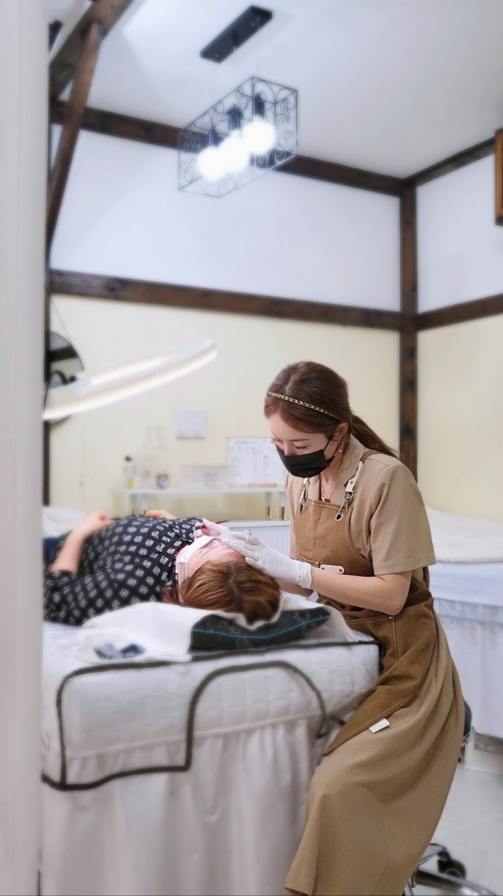
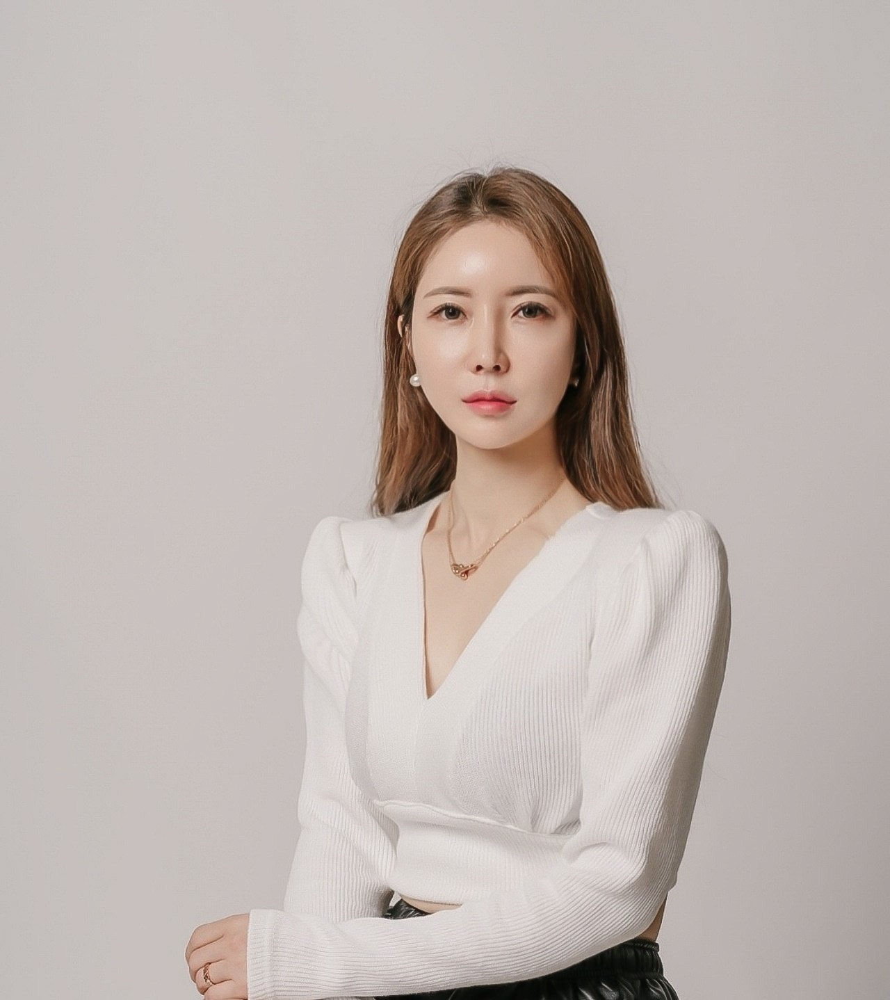
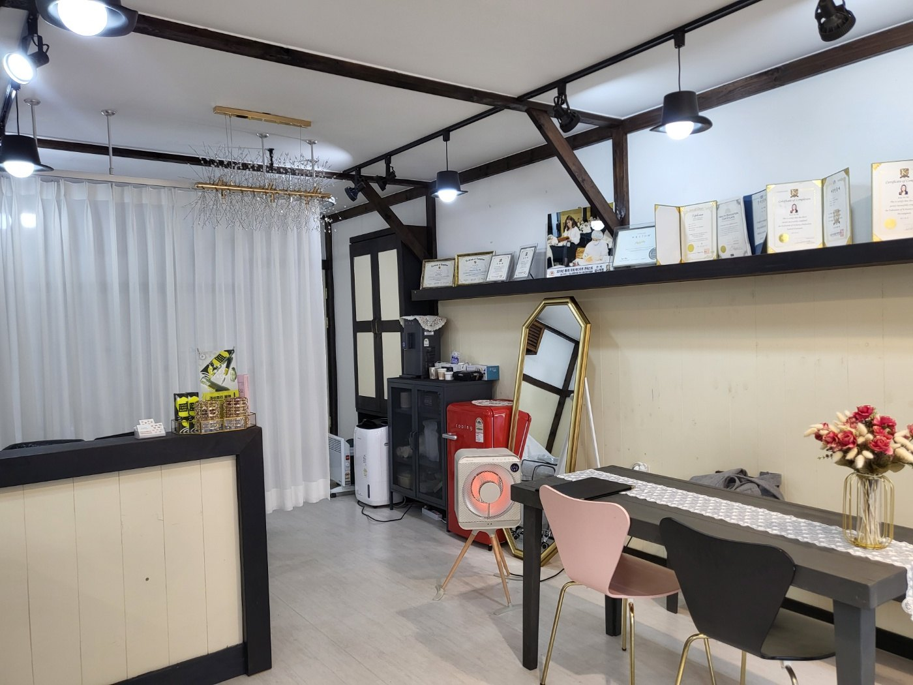
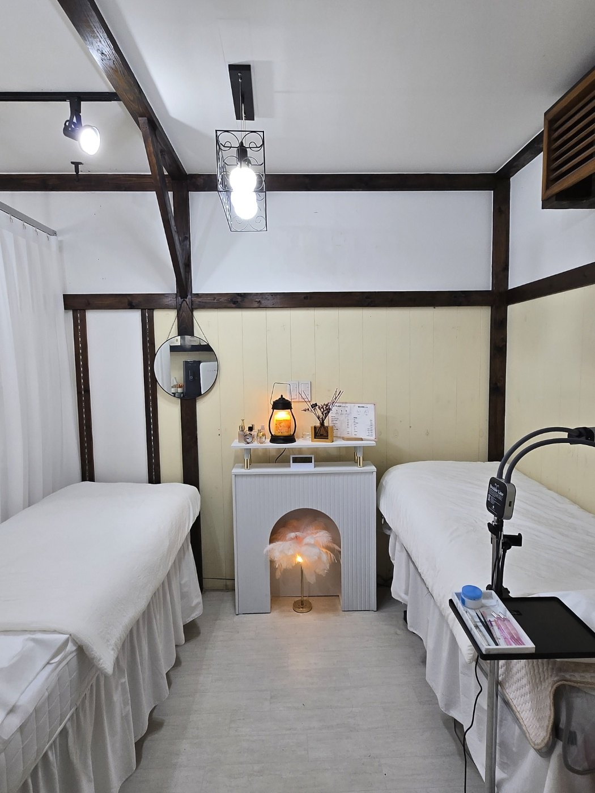
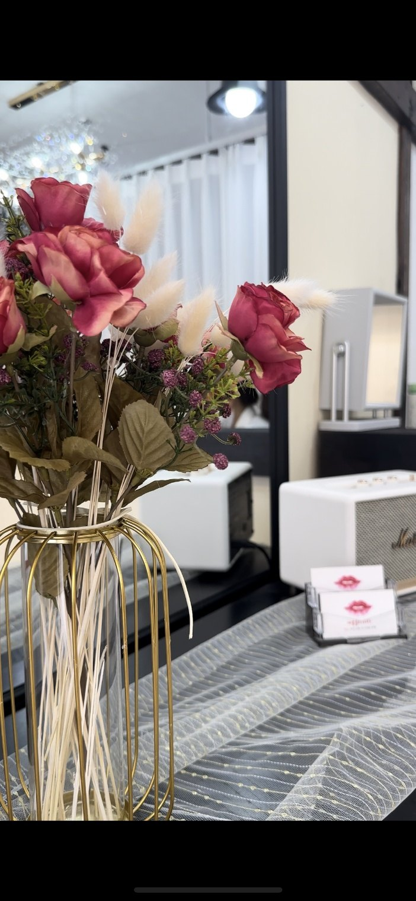

그릴 때마다 달라지는 모양
양쪽 높이를 맞추려다 진해지고,
어디까지 그려야 할지 헷갈렸다면.
거제 옥포 · 예쁨을더하다
진해질까 걱정되는 첫 눈썹도,
남아 있는 잔흔 고민도. 상담부터 시작하세요.
REAL WORK / 예쁨을더하다
자연스러운 눈썹도, 또렷한 눈썹도.
사진을 누르면 크게 보고 넘겨볼 수 있습니다.
옆으로 넘겨 시술 사진을 확인해 보세요 →
매장 제공 시술 사례입니다. 피부 상태와 기존 잔흔에 따라 표현·착색·유지 기간에는 개인차가 있습니다.
비슷한 사례를 찾으셨다면, 현재 눈썹 사진으로 상담해 보세요.
BEFORE YOUR FIRST BROW
눈썹의 모량과 방향, 눈매와 얼굴의 균형은 다릅니다.
어떤 모양을 할지 정하기 전에, 지금의 눈썹부터 살펴보세요.
양쪽 높이를 맞추려다 진해지고,
어디까지 그려야 할지 헷갈렸다면.
빈 곳은 신경 쓰이지만
눈썹만 도드라져 보일까 걱정된다면.
다시 진행해도 괜찮을지,
어떤 디자인이 가능할지 궁금하다면.
그 고민을 듣는 것부터 시작합니다.

PERSONAL BROW DESIGN
얼굴형, 눈매, 눈썹이 자라는 방향까지.
원하는 느낌과 본래 가진 분위기가 어우러지도록.
골격과 눈매, 근육의 움직임과 비대칭을 살펴 디자인 방향을 찾습니다.
눈썹의 분포와 방향, 기존 잔흔과 피부 상태를 먼저 확인합니다.
평소 메이크업과 원하는 분위기. 자연스러운 결부터 또렷한 표현까지 상의합니다.

YOUR BROW DESIGNER
같은 모양도 얼굴형과 눈매에 따라 다른 분위기를 만듭니다. 유행하는 모양을 먼저 정하기보다, 본래 눈썹과 평소 메이크업, 원하는 느낌을 함께 살핍니다.
오래 찾아주신 고객과 소개로 이어진 만남처럼, 처음 오시는 분도 자신의 취향을 편하게 이야기하셨으면 합니다.
네이버에서 매장 정보·고객 후기 확인 ↗THE PROCESS
기존 시술 경험과 잔흔, 피부 상태와 원하는 이미지를 확인합니다.
골격과 눈매, 눈썹 분포를 살피며 어울리는 방향을 함께 찾아갑니다.
1차 작업 후 탈각 상태와 진하기를 상의해 리터치로 보완합니다. 세부 일정은 상담 시 안내합니다.
MEN’S BROW
빈 곳과 눈썹의 흐름이 신경 쓰이지만, 너무 진하게 바뀌는 건 부담스럽다면 현재 상태부터 편하게 상담해 주세요.
사진에 겹쳐 있던 흰색 문구를 제거한 이미지입니다. 피부 상태와 촬영 시점에 따라 표현과 결과에는 개인차가 있습니다.
PRICE & BOOKING
원하는 모양을 정확히 설명하지 못해도 괜찮습니다.
현재 눈썹 사진과 고민부터 보내주세요.
자연눈썹(엠보기법) 12만원부터
맞춤 디자인 상담 · 리터치
다른 기법·잔흔에 따른 금액, 리터치 횟수·기한 등 세부 조건
BEFORE YOU DECIDE
처음이라도, 잔흔이 남아 있어도.
걱정되는 점부터 편하게 말씀해주세요.
고객별 위생관리와 작업 공간의 청결을 기본으로, 시술 전 피부 상태와 특이사항을 확인합니다.
1차 작업은 부담스럽지 않은 자연스러운 표현을 중심으로 진행합니다. 리터치 시 탈각 상태를 확인하고 원하는 진하기를 상의합니다.
근육의 움직임과 비대칭, 눈썹 분포를 확인하고 평소 메이크업과 원하는 분위기를 함께 살펴 디자인 방향을 찾습니다.
잔흔의 색과 진하기에 따라 달라집니다. 특히 진한 푸른 잔흔은 진행이 어려울 수 있어 현재 눈썹 사진으로 먼저 상담해 주세요.
통증에는 개인차가 있으며 불편함을 느끼실 수 있습니다. 걱정되는 부분과 피부 특이사항은 상담 시 말씀해 주세요.
자연눈썹(엠보) 기준 120,000원부터이며 리터치 포함입니다. 다른 기법과 잔흔 상태에 따른 금액, 리터치 횟수·기한 등 세부 조건은 상담에서 확인해 주세요.
속눈썹펌과 속눈썹연장도 함께 운영합니다. 원하는 디자인과 가능한 일정은 문의해 주세요.
PHOTO CONSULTATION
어떤 기법이 맞을지 혼자 정하지 않으셔도 됩니다.
현재 눈썹과 원하는 분위기를 알려주시면 상담을 이어갑니다.
눈썹이 잘 보이는 밝은 곳에서 정면과 양쪽 눈썹을 찍어주세요. 필터 없이 보내주시면 상태 확인에 도움이 됩니다.
평소 그리는 모양, 피하고 싶은 진하기, 기존 반영구 경험과 잔흔 여부를 함께 알려주세요.
원하는 방문 일정을 알려주고, 적용 금액과 리터치 조건을 확인한 뒤 예약을 진행해 주세요.
사진 상담은 현재 상태를 살피기 위한 안내이며, 최종 디자인과 진행 가능 여부는 방문 시 상태를 확인한 뒤 달라질 수 있습니다.
SPACE
고객별 위생관리와 작업 공간의 청결을 기본으로,
시술 전 피부 상태와 특이사항을 확인합니다.



오시는 길
경남 거제시 옥포로20길 9
YOUR NEXT STEP
원하는 모양을 정확히 설명하지 못해도 괜찮습니다.
현재 눈썹과 고민부터 편하게 보내주세요.